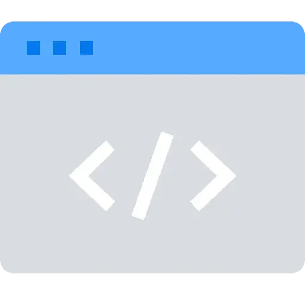
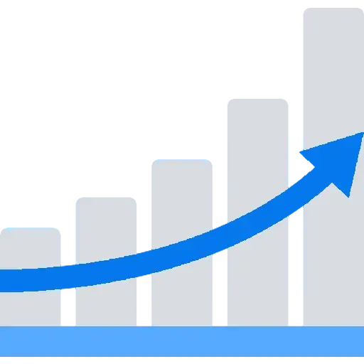
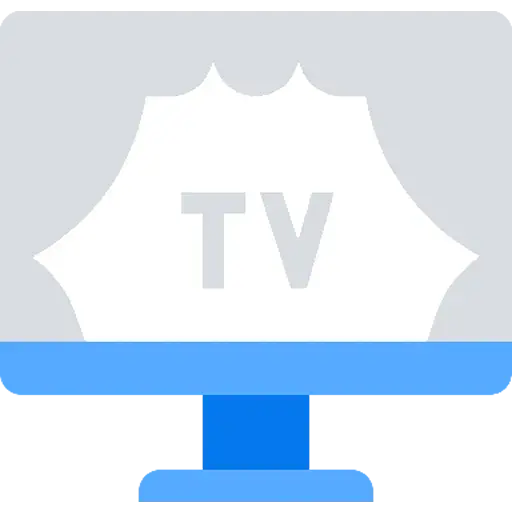

Программное обеспечение инфокоммуникаций
Программно-техническое обеспечение инфокоммуникационных систем

Технологии обработки и анализа мультимодальных данных

Телевизионные и мультимедийные системы
Метрология, стандартизация и сертификация в инфокоммуникациях